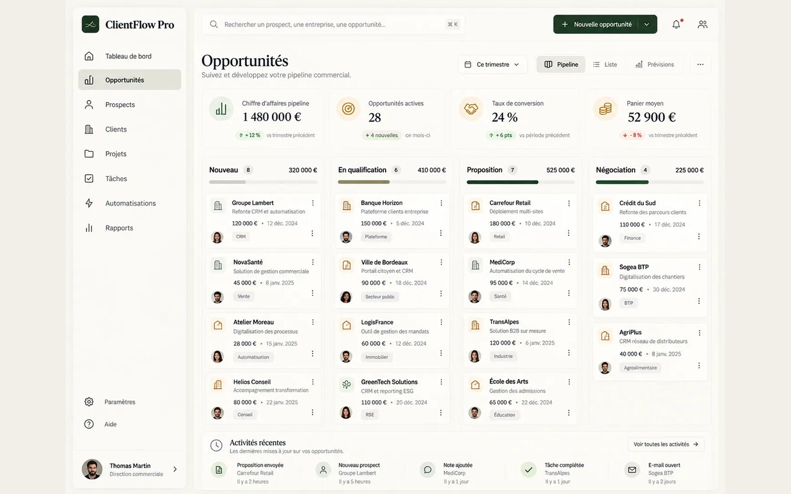

Deux Rives Web
A French-first software company building business applications, websites, integrations and automation.

- Role
- Co-founder, software and web engineering
- Location
- Paris, France
- Audience
- French-speaking businesses
- Website stage
- Public GitHub Pages preview
Business software for French-speaking teams
I co-founded Deux Rives Web, a software company registered in France. We help businesses define and build the software behind a service, from a public website and enquiry flow to the application, integrations and automation their teams use to deliver the work.
Make the service easier to evaluate
I worked on the site’s information architecture, responsive interface and demo catalogue. The site gives visitors a way to compare services, try a workflow and prepare a project brief with the information needed for a first conversation. I organised the service content around scope, deliverables, integrations, timing, ownership and support.
Show the decisions a team makes
ClientFlow Pro illustrates lead follow-up and pipeline ownership. ChantierPilot shows how a construction team can follow site updates. DocuPilot AI illustrates document review and validation. The demos run in the browser with sample data so a visitor can explore what the workflow asks of each person.
A static site with interactive prototypes
The website is generated with Node.js and delivered as static HTML, CSS and JavaScript on GitHub Pages. The public preview shows the service site and fictional workflow examples. The custom-domain launch is a separate step.